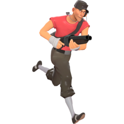
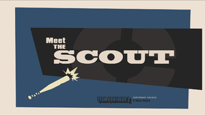

scout
- icono:
- tipo: ofencivo
- salud: 125/185 ( consulte Salud a continuación para obtener Emblema médico ROJO.
 más detalles)
más detalles) - velocidad:133%
meet the scout
Nacido y criado en Boston , Massachusetts , EE. UU. , el Scout es un luchador veloz con un bate de béisbol y una actitud sarcástica y directa. Es el mercenario más rápido y móvil en el campo de batalla sin ayuda. El doble salto de Scout le ayuda a superar a oponentes más lentos como el Heavy y a navegar por el terreno mientras esquiva balas y proyectiles que se aproximan. Al llevar una pistola de dispersión , una pistola y un bate , es una clase ideal para peleas agresivas y flanqueos. Scout destaca en tácticas de "golpear y huir" que minan la salud del enemigo, ya que su alta movilidad le permite entrar, causar daño y escapar antes de que lo noten. Sin embargo, Scout posee el grupo de salud predeterminado más bajo (junto con el Ingeniero , el Francotirador y el Espía ), lo que lo deja vulnerable en la primera línea. Sin embargo, esta es una compensación justa dada su capacidad para entrar y salir rápidamente de los puntos conflictivos, lo que le permite cambiar el rumbo de la batalla antes de que el equipo enemigo se dé cuenta. Scout es generalmente una excelente opción para centrarse en el objetivo. Es la única clase que puede capturar puntos de control y empujar carros al doble de velocidad normal. El Demoman y el Soldado sólo pueden replicar esta habilidad cuando equipan el Tren del Dolor . Su velocidad también lo hace ideal para capturar maletines de inteligencia .